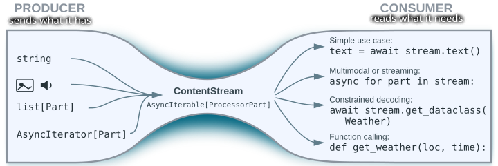

Design Principles
GenAI Processors design principles
Reduce fragmentation
The field of agents and LLMs is moving quickly, leading to many ideas maturing independently. This has resulted in a proliferation of narrowly scoped APIs and frameworks. While these solutions are often well-suited for their specific tasks, they create friction at their boundaries, hinder knowledge sharing with ad-hoc solutions, and lead to the same problems being solved repeatedly. The fragmentation happens in multiple dimensions:
- Disparate APIs: Different components (models, agents, tools) have their own APIs. The lack of a common language makes it difficult to interchange or compose them, especially since their goals and capabilities are often overlapping.
- Content types: The ease of working with text means that multimodality is often an afterthought, with custom and sub-optimal solutions being built on a case-by-case basis. In particular, control tokens are often represented as text rather than as a separate modality, which makes systems much more vulnerable to prompt injections.
- Execution models: Synchronous, streaming, and real-time execution are often treated as separate domains, which prevents code and knowledge reuse and leads to the same code rewritten in as many variants as execution modes.
This fragmentation feels even more artificial now that the line between LLMs and tools is blurring. Originally, tools were built to give LLMs access to a world of existing, strongly-typed endpoints (like JSON RPCs). This created a clear split: models handled free-form prompts, while tools required strict function signatures.
Today, that separation is breaking down. "LLM-native" tools are now often backed by models themselves, allowing them to process free-form input directly. At the same time, techniques like constrained decoding allow forcing models to produce strictly structured, type-safe outputs. In this new landscape, the distinction between a schema-less model and a strongly-typed tool is quickly disappearing.
The Shift in Practice: Where Rigid APIs Fall Short
Here is how that tension manifests in real-world scenarios:
-
Models acting as tools: Can a lightweight model like gemini-flash-lite use gemini-pro as a tool to solve complex reasoning? If so, can that "tool" recursively make its own tool calls or pause to ask the user for clarification?
-
Multi-modal tool interfaces: Can a multimodal model like Nano Banana be plugged as a tool? Can its instructions include images?
-
Balanced Infrastructure: Since most users only need a simple "string-in, string-out" API, how do we build a foundation that supports basic users without limiting advanced developers? Can one architecture effectively cater to both?
This fragmentation is not inevitable. It is the result of how systems naturally evolved along the path of least resistance. We propose an approach based on three core pillars that actually remove these constraints, or at least reduce them drastically:
- Unified content model - We use a single, consistent representation for inputs and outputs across models, agents, and tools. This way they can interact with each other. A unified model doesn't necessarily mean a lack of typing and structure. Just as JSON can have a schema (while Protobuf can be used through introspection without a .proto definition), content can remain structured while being universally readable across the ecosystem.
- Processors - at the core are just functions that consume and produce content. We don't need to reinvent a new language for control flow; we use Python. Think of the difference between PyTorch/JAX and the original TensorFlow. While TensorFlow often felt like its own separate language you had to learn, PyTorch and JAX integrate natively with Python. We aim for that same "idiomatic" feel where the AI framework disappears into the code.
- Streaming - should be a capability, not a constraint. The system is designed so that each processor decides independently how it consumes and produces the content. The infrastructure adjusts the plumbing accordingly.
Managing the complexity
For us, complexity is primarily defined by how hard it is to understand the agent's code. Our goal is to provide an API that encapsulates this complexity. The agent shouldn't pay for what it doesn't use, but when it needs something, the plumbing should be there.
By delegating the heavy lifting to native Python and asyncio, we ensure our
framework feels like an extension of existing Python logic, not a hurdle. On top
of this foundation, we’ve added an Hourglass-like Architecture, a universal
adapter for flowing data in and out of any model:
- Producer yields Content in whatever form is most convenient: just a string, list of multimodal Parts, AsyncIterator...
- It is reduced to a uniform stream of
ProcessorPart. This is our "fixed point" that ensures compatibility across the entire system. - Consumer declares what it needs and the stream is narrowed down to that,
with checks. Need a plain-text answer? Use
await stream.text(). Handling multimodal data or a stream? Useasync for part in stream:. For Tools (which are just Python functions), the function signature itself acts as the declaration.

This works because LLMs act as a design anchor: content circulating through the system will go to or be produced by them, likely multiple times and at different levels. Since models naturally process weakly typed, multimodal data, sticking to a flexible format ensures we remain compatible with the broader AI ecosystem.
However, this flexibility is a strategic trade-off: working with weakly typed data is harder. Rather than attempting to eliminate that inherent complexity — which usually just causes it to resurface as fragmentation elsewhere — we keep it in check by encapsulating it within a robust, shared library covered by exhaustive tests.
Many other APIs prioritize avoiding client-side libraries to simplify cross-language support. We believe the 'fragmentation tax' of that approach is too high; for us, the investment in a unified library is a price worth paying to maintain both flexibility and system consistency.
Unified content model
For an ecosystem to communicate effortlessly, every component — models, agents, and tools — must speak the same language. GenAI Processors adopt the core content representation of the Gemini API, but wrap it in convenience classes to provide essential "syntax sugar".
Notably, our Content API is modular; it provides value as a standalone library and can be used independently of the broader Processors framework.
We had to make a couple of deviations from the vanilla Gemini API, though:
- Syntax sugar:
ProcessorPart/ProcessorContentare constructible from many types used to represent content. Following our "producer can yield whatever multimodal data it has and we will sort it out" principle, if an agent needs to say"Hello world!"then"Hello world!"is what you type, there is no need to wrap it intypes.Part.from_text(text="Hello world!"). We’ve also added built-in accessors that safely narrow content to a specific modality (text, image, etc.) with integrated validation. - Flat Content: In traditional APIs, turns are nested within separate
objects. While intuitive, this structure breaks during real-time streaming.
We’ve moved the
roleproperty directly to thePartlevel. This "flat" architecture ensures that every chunk of data in a stream is self-describing. Note that content returned by turn-based models is still a single turn. - Extensibility: The Gemini API is built for Gemini models, but agents often need to pass custom metadata or unique data structures (like Python dataclasses). This should not require changing the API. Rather than reinventing the wheel, we took inspiration from the tech stack on which the Internet has been running for decades, in particular multipart/mixed defined in RFC 1341 from 1992.
Streaming: responsiveness without complexity
When prototyping a new agent or exploring a fresh idea, simplicity is king. Synchronous, text-only APIs are the easiest starting point. However, models take time to respond, tools make RPC calls, multi-agent systems grow complex while the user wants a responsive UI. Streaming is the key to that UX, but it often feels like a heavy architectural burden. How do we make the transition to streaming painless when the time is right?
First of all, allow each component to independently decide whether it wants to
stream or not. On the interface level, we always use multimodal content streams.
But this doesn't add much complexity: writing await prompt.text() is not much
harder than writing prompt.
The second key observation is that code designed to handle multimodal content
naturally fits a streaming pattern. By using the async for part in content:
syntax, the same logic works whether the data arrives all at once or bit-by-bit.
This approach keeps your code clean and linear, completely avoiding the
"callback hell" often associated with asynchronous event handling.
To further simplify the code we wrap our streams in the
ContentStream
mixin instead of using plain AsyncIterable[ProcessorPart]. This mixin provides
the "syntax sugar" to any kind of ProcessorContentTypes or AsyncIterator of
such. Importantly, this stream doesn't even have to originate from a Processor;
it's a universal utility for the entire ecosystem.
Processors
At a high level, models, agents, and tools are just transformations of content. As mentioned before, we rely on time-proven and well-known tools: Python and Asyncio. These provide the robust, native runtime your agents need.
We call these functional blocks Processors (to avoid confusion with the "Transformer" neural network architecture). In the very first version of the library they were regular async Python functions. But then we realized that by following a specific implementation pattern, we can make code much simpler and unlock advanced optimizations and introspection.
The dual-interface pattern
A Processor needs to balance two different needs: it must be easy to call (for the user) and easy to implement (for the developer). We achieve this by splitting the interface:
class MyProcessor(Processor):
# The CONSUMER Interface:
# Designed for the caller. It is permissive with inputs and
# provides a rich, "sugared" stream as the output.
@typing.final
def __call__(
self, content: AsyncIterable[ProcessorPartTypes]
) -> ProcessorStream:
...
# The PRODUCER Interface:
# Designed for the author. It provides a concrete, structured
# input while allowing the author to yield content in whatever
# raw format is most convenient.
@abc.abstractmethod
async def call(
self, content: ProcessorStream
) -> AsyncIterable[ProcessorPartTypes]:
This "Asymmetric Interface" acknowledges that producers and consumers have different priorities: the Consumer wants ease of use, the Producer wants ease of creation. In addition, by placing a library-owned interposer between these two interfaces, we gain powerful capabilities without complicating your code. For example, it allows introspecting the processor chain for debugging, logging, and performance monitoring.
What it means in practice
Simple and natural code that scales with your requirements. You can start with the absolute basics and add complexity only when you need it. If you need a quick answer from a model, it’s a one-liner:
model = genai_models.genaiModel(...)
print(
await model('Answer to the Ultimate Question of Life, the Universe, and Everything').text()
)
If we were to expect the answer to actually be a bit longer and were anxious to learn the wisdom, we probably would have written
To add more functionality while keeping the code structured, processors can be
chained using +. For instance, if the model doesn't have native audio support,
we can prepend a speech-to-text stage and a microphone input:
from genai_processors.core import audio_io
from genai_processors.core import speech_to_text
agent = audio_io.PyAudioIn(pyaudio.PyAudio()) + speech_to_text.SpeechToText(...) + model
And if we need to move beyond linear chains, we can use good old Python control flow. For instance, let's squeeze some extra quality by using a critic-reviser pattern:
class CriticReviser(processor.Processor):
"""Agent that uses a critic-reviser loop to improve responses."""
def __init__(self, model: processor.Processor, max_iterations: int = 5):
self._model = model
self._max_iterations = max_iterations
async def call(
self, content: processor.ProcessorStream
) -> AsyncIterable[content_api.ProcessorPartTypes]:
# We gather content from the stream as we will need to reuse it multiple times.
input_content = await content.gather()
current_response = await self._model(input_content).gather()
for _ in range(self._max_iterations):
critic_response = await self._model([
input_content,
'\n\nDraft response:\n\n',
current_response,
(
'\n\nYou are a harsh critic. Review the draft response to the'
" user's prompt. If the draft fully answers the prompt and has no"
" obvious flaws, simply output 'OK'. Otherwise, concisely list"
' the flaws or missing information. Do not rewrite the response.'
),
]).gather()
critic_text = await critic_response.text(strict=False)
if critic_text.strip().upper() == 'OK':
break
current_response = await self._model([
input_content,
'\n\nDraft response:\n\n',
current_response,
'\n\nCriticism:\n',
critic_response,
(
'\n\nUpdate your previous draft response to address the'
' criticism. Keep the parts that are already good.'
),
]).gather()
for part in current_response:
yield part
Conclusion
I didn't have time to write a short letter, so I wrote a long one instead.
― Mark Twain
If left unchecked, building AI applications becomes an exercise in wrangling disjointed APIs. You end up writing the "long letter"—miles of glue code just to keep agents, models, and UIs in sync.
This trap has only deepened with the rise of coding agents. While these tools make it easier than ever to generate "long letters" in seconds, the resulting bloat is a liability for maintenance and quality control. Whether you are writing the code yourself or directing an AI to do it, volume is rarely a proxy for value.
GenAI Processors is built to eliminate this "plumbing tax." By leveraging a unified content model and native asyncio patterns, the framework decouples the messy parts of orchestration from your actual logic. It provides the architectural constraints necessary to write the "short letter". No matter who—or what—is hitting the keys, it’s about having the plumbing you need without the bloat you don't.